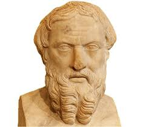

Historia, Cultura y Trabajo
¿Qué es la Historia y sus Fuentes?
La historia es un conjunto de hechos políticos, económicos, sociales y culturales relacionados entre sí, ocurridos en un tiempo pasado y lugares determinados, los cuales son llevados a cabo por protagonistas que van desde reyes hasta campesinos y científicos. Más allá de ser solo los acontecimientos, se define como una ciencia social que investiga y escudriña el pasado con el objetivo de construir conceptos que nos ayuden a entender claramente sus antecedentes y consecuencias.
Para conocer y reconstruir este pasado, los historiadores estudian y contrastan las fuentes históricas, que son cualquier resto material, documento escrito, oral, gráfico o audiovisual que ofrece información sobre la actividad humana. Según su origen, estas fuentes se clasifican en:
Primarias: Aquellas que pertenecen de forma directa a la época histórica estudiada, como una moneda, una espada, un diario privado o un anillo.
Secundarias: Aquellas elaboradas en épocas posteriores a partir de las fuentes primarias, como un mapa o la descripción de una moneda que encontramos en un libro.
En la antigüedad, los pioneros de la historia eran personas dedicadas a las letras que relataban los sucesos de su tiempo, especialmente las guerras, aunque solían presentar el hecho desde el punto de vista de uno de los contendientes; un ejemplo clave es el griego Heródoto, considerado el primer historiador del mundo occidental. Debido a que la escritura no era de uso generalizado, existen pueblos de los que se sabe muy poco o nada por la falta de registros escritos. Por esta razón, la arqueología se vuelve fundamental para estudiar el pasado de la humanidad y de las civilizaciones antiguas, ya que permite obtener datos valiosos a través de los objetos manufacturados del pasado.

La Periodización y las Unidades de Tiempo
Uno de los trabajos principales de los historiadores consiste en ubicar los hechos históricos en el tiempo de forma cronológica, lo cual es la ordenación sucesiva de los acontecimientos del pasado. Con el fin de tener una mejor comprensión de la Historia Universal, esta se ha dividido en distintos periodos o edades. Sin embargo, dado que estas divisiones corresponden a cambios radicales en las características de la sociedad occidental sin tomar en cuenta lo que ocurría en otras partes del mundo, se señala que la división tradicional de la historia es eurocéntrica.
Para computar el tiempo existen distintas formas según cada cultura; por ejemplo, los romanos iniciaban su cuenta en el año de la fundación de Roma (753 a. C.) y los musulmanes en el año de la Hégira (622 d. C.). En la cultura occidental, el cómputo de los años se inicia con el nacimiento de Jesucristo, el cual se establece como el año 1. A partir de este punto de referencia, los años anteriores se denominan antes de Cristo (a. C.) y los años posteriores como después de Cristo (d. C.). Además, para medir extensiones de tiempo más largas se usan los siglos (donde el siglo I transcurre entre los años 1 y 100, el siglo II entre el 101 y 200, y así sucesivamente) y los milenios (donde el primer milenio abarca desde el año 1 al 1000). Cabe destacar que en este sistema de medición no existe el año 0.
El Método de Trabajo del Historiador
El estudio histórico no es una simple recopilación de datos, sino un trabajo riguroso y científico que sigue un método ordenado en cuatro pasos indispensables:
- La elaboración de hipótesis: Una vez elegida la época y los hechos que quiere estudiar, el historiador plantea una serie de preguntas para las que quiere obtener respuesta (¿ cuándo pasó?, ¿por qué pasó?, ¿hubo personajes destacados?, ¿ qué consecuencias tuvo?). Basándose en sus conocimientos previos, elabora una hipótesis, que es una idea que se cree verdadera o acertada y que debe confirmarse o modificarse a partir de la investigación.
- La búsqueda de información: Consiste en obtener datos y evidencias a partir de las fuentes históricas, las cuales son muy variadas e incluyen documentos escritos, restos arqueológicos, recursos audiovisuales u orales.
- El análisis de las fuentes de información: Una vez conseguida la información, el historiador la analiza bajo criterios críticos. Debe valorar si los datos de las distintas fuentes coinciden o difieren, siendo habitual que cambie la visión de un hecho (como una batalla) según provenga de los vencedores o de los vencidos. También determina el rigor y fiabilidad de cada fuente.
- La elaboración de conclusiones: Finalmente, el historiador redacta una conclusión detallada que da respuesta a las preguntas formuladas al comienzo del proceso, confirmando o modificando de este modo la hipótesis que guió toda la investigación.
.png)
Causas y Consecuencias de los hechos Históricos
En sus investigaciones, los historiadores no intentan solo conocer qué pasó o cómo se vivía, sino que buscan explicar el porqué de un hecho o de una forma de organización social. Los hechos históricos nunca ocurren de forma aislada ni por un solo motivo; por el contrario, son multicausales, lo que significa que son el resultado de múltiples causas que se entrelazan entre sí. Estas causas pueden clasificarse en varios tipos:
- Económicas: Como la pérdida de una cosecha debido a la sequía.
- Políticas: Como el estallido de una guerra.
- Sociales: Como la protesta de un grupo social por la subida de impuestos.
- Culturales: Como un descubrimiento científico importante.
- Personales: Como la muerte de un rey sin dejar descendencia directa.
Asimismo, todos los hechos históricos producen efectos o consecuencias que, con el tiempo, se convierten en las causas de otros acontecimientos futuros, permitiéndonos entender la sucesión y los cambios de la historia. Este enfoque complejo también ha cambiado la visión de quiénes son los protagonistas de la historia. Tradicionalmente, los estudios se centraban únicamente en grandes personajes (reyes, presidentes, líderes políticos). En la actualidad, los historiadores intentan conocer también cómo vivían las personas de las diferentes épocas, analizando su vida cotidiana, su alimentación, sus viviendas, la situación de las mujeres y la educación del resto de la sociedad.

Las Ciencias Auxiliares
La historia no trabaja en solitario; existe un conjunto de disciplinas, muchas de ellas del ámbito social, que la auxilian en su quehacer diario y complementan sus investigaciones. Entre las principales ciencias auxiliares se encuentran:
- Antropología: Ayuda a estudiar los hábitos, costumbres y relaciones culturales de los grupos humanos a través del tiempo.
- Geografía: Auxilia a ubicar los lugares, el territorio y el medio físico exacto en el que tuvieron lugar los hechos históricos.
- Geología: Es especialmente útil para estudiar las primeras etapas de la evolución del planeta, ya que se ocupa de la formación y constitución de la corteza terrestre.
- Paleontología: Estudia los fósiles animales y vegetales pertenecientes a épocas remotas.
- Paleografía: Se ocupa de estudiar las formas de escritura antigua y los signos convencionales que los humanos utilizaban para comunicarse, lo cual es muy importante para descifrar el contenido de documentos antiguos.
- Arqueología: Estudia el pasado remoto analizando los restos materiales, especialmente de épocas en las que aún no existía la escritura. Los arqueólogos utilizan el análisis de las fuentes materiales y se valen de técnicas científicas avanzadas, como la prueba del Carbono 14 (una sustancia presente en los organismos vivos), para medir la velocidad de su degeneración en los fósiles y determinar con exactitud hace cuánto tiempo murió un animal, planta o persona.

La Utilidad de la Historia
Aprender e investigar la historia tiene funciones fundamentales para el desarrollo humano racional. En primer lugar, nos ayuda a comprender el pasado y el presente; para poder entender los hechos políticos y sociales actuales, necesitamos conocer de forma obligatoria los acontecimientos que ocurrieron en el pasado. Asimismo, nos ayuda a desarrollar una visión crítica de los hechos, permitiéndonos buscar la verdad sobre los sucesos acontecidos y evitando que nos dejemos engañar en el presente.
La historia es también el intento del ser humano racional por ser consciente de sí mismo y de su situación en el mundo. A través del estudio de datos simples aportados por documentos y restos, la historia elabora conceptos complejos sobre cómo los seres humanos en el pasado actuaron para:
Mantener y mejorar sus condiciones de vida: Lo que se denomina producción material (viviendas, herramientas, tecnología).
Dar significado o sentido a su existencia: Lo que se conoce como producción simbólica, expresada mediante la religión, el arte, la ciencia y la escritura.
Estas dos producciones humanas (material y simbólica) conforman en su conjunto lo que conocemos como cultura. Finalmente, el texto hace una aclaración importante sobre la naturaleza: los desastres naturales y catástrofes (como temblores, tsunamis o incendios forestales no provocados) son en sí mismos solo fenómenos naturales. Estos fenómenos se vuelven parte de la historia únicamente en virtud de que afectan directamente al ser humano consciente, quien ve su vida impactada por ellos.